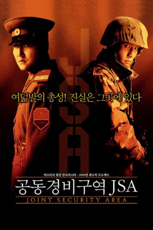

#9130 JSA - Joint Security Area
Alternativ: Joint Security Area (Englischer Titel)
 
 IMDB-Wertung: 7.9 / 10
IMDB-Wertung: 7.9 / 10  Metascore: 0
Metascore: 0 
Der Todesstreifen zwischen Nord- und Südkorea ist seit dem Fall des Eisernen Vorgangs die tödlichste Grenze der Welt. Hier stehen sich die Mitglieder einer gespaltenen Nation in unversöhnlicher Feindschaft gegenüber. Doch auch in der Todeszone gibt es Menschlichkeit. Als ein Soldat auf eine Mine der Gegenseite tritt, werden die Feinde zu Lebensrettern. Eine geheime Kameradschaft entwickelt sich zaghaft zwischen den Grenzposten – bis eines Tages Schüsse peitschen und zwei Soldaten tot zusammenbrechen…
Jahr: 2000
Dauer: 108 Minuten
FSK: 16
Land: Süd-Korea Studio: Rapid Eye MoviesTonspuren:
Untertitel: Deutsch,
Auflösung: 1080p (1920x824) Größe: 7290 MB
Genre: Action, Thriller, Drama, Krieg
Regisseur: Chan-wook Park
Drehbuch: Deon Taylor
Soundtrack: Jun-seok Bang, Yeong-wook Jo
Darsteller:
- Yeong-ae Lee als Maj. Sophie E. Jean
- Byung-Hun Lee als Sgt. Lee Soo-hyeok
 Kang-ho Song als Sgt. Oh Kyeong-pil
Kang-ho Song als Sgt. Oh Kyeong-pil- Tae-woo Kim als Nam Sung-shik
 Ha-kyun Shin als Jeong Woo-jin
Ha-kyun Shin als Jeong Woo-jin- Christoph Hofrichter als Maj. Gen. Bruno Botta
- Herbert Ulrich als Swedish soldier
- Micara Adriana als
- Gallego Alberto als
- Ahmedov Ayder als
- Cannon Greg Courtney als
- Ju-bong Gi als General Pyo
- Isaac Green als
- Kwang-il Kim als Civil Servant #3
- Myoeng-su Kim als Top Ranking Officer Choi
- Tae-hyeon Kim als South Korean military
- Namhee Kwon als Jung Woo-Jin's Mother
- Dae-yeon Lee als Sgt. Kwang
- Do-yub Lee als South Korean soldier #7
- Han-wi Lee als Major Kang
Datei: X:\HD-Eastern-Modern(A-M)\JSA - Joint Security Area (2000, FSK16, 1920x824).mkv seit 19.07.2018
Festplatte: HD Eastern+Western
 Es gibt insgesamt 104 Filme in der Gruppe 'HD-Eastern-Modern(A-M)'
Es gibt insgesamt 104 Filme in der Gruppe 'HD-Eastern-Modern(A-M)'